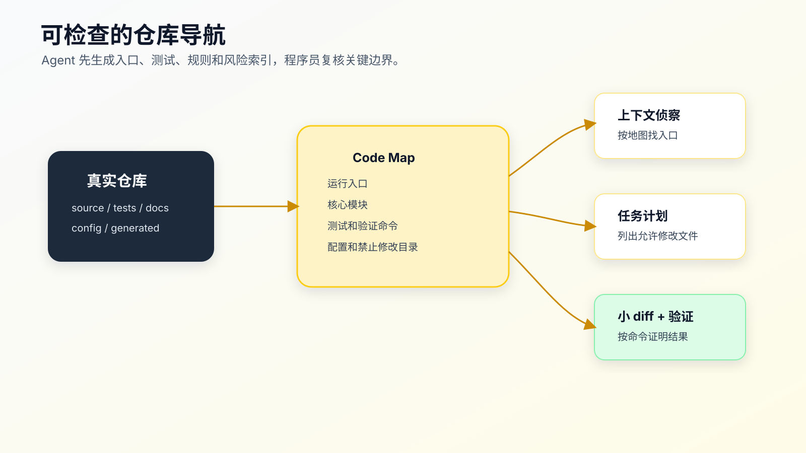

代码地图不是手工文档：让 Agent 生成可检查的仓库导航
让 AI 接手陌生项目，不要第一句就说“你先读一下这个项目”。
这句话太虚。Agent 会自己搜索，但你不知道它先读了什么；它会总结项目，但你不知道总结基于哪些文件；它会说“我理解了”，但你不知道它有没有漏掉入口、测试、生成目录和项目规则。
陌生项目的第一步，不是让人手写一份大文档，而是让 Agent 或工具先生成一份可检查的仓库导航。
代码地图不是完整架构文档，也不是静态大图。它是一份给人和 Agent 共用的导航索引：项目入口在哪里，核心模块在哪里，测试在哪里，配置在哪里，哪些目录不能改，常用验证命令是什么。
有了这份导航，AI Coding 的起点就从“随便搜”变成了“按证据侦察”：Agent 负责读取和生成初稿，程序员负责确认真实入口、禁止修改路径和验证命令。

没有代码地图，Agent 会怎样接手项目
一个陌生仓库里，Agent 常见起手动作是：
ls
find . -maxdepth 2 -type f
rg -n "keyword" .
cat README.md
这些动作没错，但不够。
真实项目里，文件名和目录名经常会误导它：
src/order/
src/order-v2/
src/demo/order/
src/legacy/order/
docs/order-flow.md
generated/order-client.ts
test/order.test.ts
哪个是生产路径？哪个是旧逻辑？哪个只是示例？哪个是生成文件？哪个测试覆盖当前行为？
如果这些信息没有提前标出来，Agent 可能会：
- 改到 demo 目录。
- 按过期 docs 理解当前逻辑。
- 修改 generated 文件。
- 忽略现有测试。
- 在错误入口上补实现。
- 把 legacy 兼容逻辑删掉。
代码地图的价值，就是在 Agent 动手前，把这些导航信息显式化。
代码地图解决的不是“看全项目”
代码地图不是为了让 AI 一次看完整个项目。
它解决四个更具体的问题。
第一，让 Agent 知道先看哪里。
README、项目规则、package/pom/build 配置、测试目录、模块入口，是接手项目的基础材料。
第二，让 Agent 知道哪些地方危险。
生成代码、迁移脚本、历史兼容目录、构建产物、外部 API 适配层，都不应该随便改。
第三，让 Agent 知道怎么验证。
如果项目常用命令藏在 README、Makefile、package scripts 里，Agent 很可能跑错命令或只跑一个无关命令。
第四，让上下文能复用。
同一个项目里，每次新对话都让 Agent 从零搜索，会浪费时间，也容易重复踩坑。代码地图把稳定知识沉淀下来。
所以代码地图不是一次性图片，而是仓库内可维护文档。
一份合格代码地图长什么样
先看一个简化版：
# Code Map
## Runtime Entry
- `src/server.ts`: HTTP server bootstrap.
- `src/routes/`: route definitions.
- `src/modules/order/`: order domain logic.
## Frontend Entry
- `src/App.tsx`: app root.
- `src/pages/`: route-level pages.
- `src/features/`: feature modules.
## Tests
- `test/order/`: order behavior tests.
- `test/auth/`: auth refresh/session tests.
- Focused command: `npm test -- order`
## Config
- `package.json`: scripts and dependencies.
- `tsconfig.json`: TypeScript config.
- `.env.example`: local env keys.
## Do Not Edit Directly
- `dist/`: build output.
- `generated/`: generated API client.
- lock files unless dependency changes are approved.
## AI Coding Notes
- Bug fixes should start from tests when possible.
- Do not change API contracts without explicit approval.
- If a task touches `src/modules/payment/`, run payment tests and manual callback check.
这份地图没有列出所有文件，但它给出了 Agent 接手项目时最容易漏的东西。
代码地图要短。太长会变成又一份噪音文档。它应该像机场导览图，不像城市规划档案。
先生成审计报告，再复核关键边界
完全靠人从零写代码地图，常常会拖延，也会只写自己记得住的部分。可执行的方式是先让 Agent 或脚本生成一份导航和审计报告，再由程序员复核关键判断。
配套代码仓库 DavidDingXu/learn-ai-coding 的工具 module 里有一个轻量命令：
cd learn-ai-coding/ai-coding-workflow-kit
node src/cli.js codemap --root .
当前输出类似：
# Code Map
- Total files scanned: 12
- Source files: 8
- Test files: 3
- Docs: 1
- Configs: 1
## Top Directories
- `src`: 5
- `test`: 3
- `.`: 2
- `examples`: 2
## Files AI Should Inspect First
- `README.md`
- `package.json`
- `test/codemap.test.js`
- `test/task-context.test.js`
- `test/verification-ledger.test.js`
这个命令做了几件很朴素的事：
- 统计源码文件。
- 识别测试文件。
- 识别 README、docs、
AGENTS.md、CLAUDE.md。 - 识别常见配置文件。
- 统计顶层目录。
- 列出 AI 应该优先读取的文件。
它不解析 AST，不生成调用图，不判断业务边界。这是刻意的。
陌生项目接手的第一层索引，不需要一上来就做复杂代码智能。先把入口、测试、配置和文档显出来，再由人和 Agent 针对具体任务继续搜索调用链。
如果要在任务开始前做一次更贴近生产使用的检查，可以生成上下文审计报告：
cd learn-ai-coding/ai-coding-workflow-kit
node src/cli.js context-audit --root .
它会把“优先读取文件、候选入口、测试和验证提示、需要谨慎处理的路径”放在一起，并明确提醒哪些结论需要人确认。
注意它仍然只是启发式报告。它能发现 generated/、dist/、legacy/ 这类高风险路径，但不能证明真实运行入口，也不能替你判断业务主路径。
自动地图必须复核三类信息
自动生成后，至少要复核三类内容。
第一，真实入口。
工具能看到 src/、test/、README.md，但不知道哪个文件是运行入口，也不知道哪个模块是当前业务主路径。你要让 Agent 给出依据，并由人确认：
## Runtime Entry
- `src/main.ts`: app bootstrap.
- `src/routes/order.ts`: order route entry.
- `src/modules/order/service.ts`: order business logic.
第二，禁止修改范围。
工具可以识别一些常见目录，但无法知道每个项目的实际维护约定。你要确认哪些文件是生成的、哪些是 vendor、哪些是历史兼容：
## Do Not Edit Directly
- `src/generated/`: generated from OpenAPI.
- `migrations/`: production migration history.
- `legacy/`: compatibility layer, modify only with explicit task approval.
第三，验证命令。
工具能找到 package.json，但不知道这次任务最小可验证路径。你要确认 focused test、full test 和必要的用户路径：
## Verification Commands
- Focused backend test: `npm test -- order`
- Type check: `npm run typecheck`
- Full test: `npm test`
- Frontend manual path: login -> order list -> submit order
这三类信息能直接减少误改。它们不是为了让文档好看，而是为了让 Agent 动手前先暴露依据。
代码地图不是调用链
很多人会把代码地图做成复杂调用图。调用图有用，但不是第一步。
代码地图回答的是“从哪里开始看”。调用链回答的是“这个任务影响谁”。
比如你要修订单状态回退：
代码地图告诉你：
订单模块在 `src/modules/order/`
订单测试在 `test/order/`
订单路由在 `src/routes/order.ts`
生成客户端在 `src/generated/`，不要直接改
任务开始后，Agent 还要继续查调用链：
rg -n "rollback|status|paid|pending" src/modules/order test/order
rg -n "updateOrderStatus|OrderStatus" src
这两层不要混。代码地图保持稳定，调用链跟任务走。
如果把所有调用关系都塞进代码地图，地图很快过期，维护成本会超过收益。
给 Agent 使用代码地图的提示
代码地图写好后，不要只让 Agent “参考”。要让它按地图工作。
先读取 `docs/ai-coding/code-map.md` 和项目规则。
然后围绕当前任务做侦察：
1. 根据代码地图找到候选入口、测试和禁止修改目录。
2. 用搜索确认真实调用路径。
3. 列出实际读取文件。
4. 标出可能需要修改和不应该修改的文件。
5. 给出最小计划。
在完成侦察前不要编辑文件。
这个提示把地图变成了工作步骤，而不是背景材料。
如果 Agent 输出计划时没有引用地图里的入口、测试或禁止修改目录，要让它补：
你的计划没有说明是否遵守代码地图里的 Do Not Edit 范围。
请重新检查计划，列出每个修改文件为什么允许修改。
代码地图如何保持更新
代码地图的风险是过期。
过期地图会比没有地图更糟，因为 Agent 会把旧信息当成项目事实。
建议把更新时机固定在这些节点：
- 新增或迁移运行入口。
- 测试命令变化。
- 生成文件目录变化。
- 模块拆分或合并。
- 新增重要项目规则。
- 某次 AI Coding 误改暴露了新风险。
每次更新不用大改。只改和导航有关的几行。
比如一次任务里发现 src/generated/ 不能改，就补：
## Do Not Edit Directly
- `src/generated/`: generated API client, run generation command instead of manual edits.
发现 auth 模块有专门测试命令，就补：
## Verification Commands
- Auth focused test: `npm test -- auth-refresh`
代码地图不是文档项目，它是工作流资产。谁踩坑，谁补一条。
一份代码地图的最小检查清单
写完后，用下面清单检查。
## Code Map Check
- [ ] 是否列出运行入口？
- [ ] 是否列出主要业务模块？
- [ ] 是否列出测试目录和 focused test 命令？
- [ ] 是否列出配置文件和环境说明？
- [ ] 是否列出生成文件、构建产物和禁止修改目录？
- [ ] 是否说明常见验证命令？
- [ ] 是否足够短，能让 Agent 快速读取？
- [ ] 是否避免过期的历史设计说明？
这里要控制长度。代码地图越短，越容易保持准确。
常见错误
错误一：把代码地图写成架构说明书。
本系统采用分层架构，包含表现层、服务层、数据访问层……
这种描述可能没错，但对 Agent 接手任务帮助有限。它更需要真实路径和命令。
直接写路径、用途和验证线索：
- `src/routes/order.ts`: order HTTP entry.
- `src/modules/order/service.ts`: order status transition.
- `test/order/status.test.ts`: status transition tests.
错误二：只列目录，不写用途。
- `src/`
- `test/`
- `docs/`
这和 ls 没区别。至少要写一句用途。
错误三：不写禁止修改目录。
AI 最容易误改生成文件、构建产物、历史迁移脚本。代码地图里必须把这些地方标出来。
错误四：不写验证命令。
没有验证命令，Agent 完成时就容易只说“已检查”。代码地图至少要提供常用 focused test 和 full test。
错误五：一次生成后不维护。
自动生成只是第一版。关键边界复核和持续更新才是价值。
在老项目里怎么做
老项目最适合从代码地图开始。
不要一上来要求 Agent 理解全部历史。先做一份“能动手不迷路”的地图：
# Legacy Project Code Map
## Current Entry
- `web/controller/`: current web entry.
- `service/`: business services.
## Legacy Compatibility
- `legacy/`: old endpoints, do not delete without migration task.
- `adapter/`: third-party integration compatibility.
## Tests
- `tests/`: partial coverage only.
- Manual verification required for payment callback.
## Do Not Edit Directly
- `db/migrations/`: production history.
- `generated/`: generated clients.
## Known Gaps
- Some modules have no automated tests.
- README command is outdated; use `make test`.
老项目里，要把“不知道”写出来。Agent 如果看到“partial coverage only”，就不会把测试通过当成完整证明。
代码地图和 AGENTS.md 怎么分工
这两个文件容易混。
AGENTS.md 写长期工作规则：
- Run `git status --short` before editing.
- Do not add dependencies without approval.
- Report commands and residual risk.
代码地图写项目导航：
- Runtime entry is `src/server.ts`.
- Order tests are under `test/order/`.
- Do not edit `src/generated/`.
规则回答“怎么工作”。地图回答“去哪里看”。
这两个文件可以互相引用，但不要重复太多。重复越多，越容易一处更新另一处忘。
代码地图和任务上下文包怎么分工
代码地图是长期资产，任务上下文包是单次任务材料。
代码地图：
订单模块在哪里，测试在哪里，哪些目录不能改。
任务上下文包：
这次要修订单 paid 状态回退，相关文件是哪些，不能改什么，怎么验证。
任务上下文包应该引用代码地图，而不是复制整份地图。
## Context Sources
- Code map: `docs/ai-coding/code-map.md`
- Project rules: `AGENTS.md`
这样做的好处是：地图更新后，后续任务自然受益。
可以今天就落地的版本
先让 Agent 或脚本生成一份初稿：
cd learn-ai-coding/ai-coding-workflow-kit
node src/cli.js context-audit --root .
然后把输出中确认过的信息沉淀到仓库里的导航文件，例如：
docs/ai-coding/code-map.md
这份文件可以很短：
# Code Map
## Entry
- `src/main.ts`: runtime entry
## Core Modules
- `src/modules/order/`: main order flow
## Tests
- `test/order/`: order behavior tests
- Focused command: `npm test -- order`
## Config
- `package.json`: scripts and dependencies
- `.env.example`: local environment keys
## Do Not Edit Directly
- `dist/`: build output
- `src/generated/`: generated API client
## Common Verification
- Focused test: `npm test -- order`
- Full test: `npm test`
- Browser path: login -> order list -> submit order
不要直接把 TODO 长期留在仓库里。让 Agent 基于审计报告和实际文件给出候选内容：
请先读取项目规则，并运行或复核上下文审计报告。
然后生成 `docs/ai-coding/code-map.md` 草稿。
要求：
1. 每个入口、测试和禁止修改路径都要写出依据。
2. 无法确认真实运行入口时停下来提问。
3. 不要修改业务代码。
程序员要做的是验收这份草稿：入口是否是真的，禁止修改路径是否完整，验证命令是否能跑。通过验收后，它才是可复用的上下文资产。
一次真实接手应该留下什么输出
代码地图不是写完就结束。它要能进入一次真实任务。
比如你准备让 Agent 接手一个陌生模块，可以要求它先输出下面这份记录：
# Onboarding Report
## Project Shape
- Node CLI project.
- Source under `src/`.
- Tests under `test/`.
- Package scripts defined in `package.json`.
## Files Read
- `README.md`
- purpose: commands and project boundary.
- `package.json`
- purpose: test command and module type.
- `src/cli.js`
- purpose: command dispatch entry.
- `src/lib/codemap.js`
- purpose: code map generation.
- `test/cli.test.js`
- purpose: CLI behavior contract.
## Candidate Runtime Entries
- `src/cli.js`
- evidence: package bin points here; process argv is parsed here.
## Test Entries
- `test/cli.test.js`
- evidence: process-level CLI behavior tests.
- `test/codemap.test.js`
- evidence: codemap output contract.
## Treat Carefully
- `examples/`
- fixture data; do not rewrite without checking tests.
- lock files
- dependency changes require explicit approval.
## Verification Commands
- `npm test`
- focused: `node --test test/cli.test.js`
## Open Questions
- Does this task require CLI process behavior or only library output?
- Should generated context be persisted or printed only?
这份记录有几个好处。
第一，它把 Agent 读过的文件列出来。你可以直接发现它是否漏了 package.json、测试或项目规则。
第二，它把“候选入口”和“证据”放在一起。没有证据的入口只是猜测。
第三，它把谨慎路径提前标出来。很多误改发生在 examples、fixtures、generated、legacy、migrations 这些地方。
第四，它把验证命令前置。等实现结束后再找命令，Agent 往往会挑最容易通过的一条。
这个记录可以由 Agent 生成，不需要你手写。你的责任是验收：证据是否成立，入口是否真实，验证命令是否能跑，禁止修改范围是否符合项目约定。
代码地图里的“证据”怎么写
很多代码地图的问题是只写结论。
- `src/order/service.ts`: order logic.
这句话有用，但不够。更好的写法是加一小段证据：
- `src/order/service.ts`: order status transition.
- evidence: imported by `src/routes/order.ts`; covered by `test/order/status.test.ts`.
证据不需要长。只要能让读者知道这个判断从哪里来。
常见证据来源有几类：
| 结论 | 可用证据 |
|---|---|
| 运行入口 | package bin、server bootstrap、route registration、framework config |
| 测试入口 | test file、script command、CI config、Makefile target |
| 生成文件 | generated header、OpenAPI config、build output path、docs rule |
| legacy 路径 | import graph、README note、route prefix、历史兼容测试 |
| 禁止修改 | project rule、generator command、migration policy、owner note |
如果 Agent 不能给证据，就让它继续侦察，不要让它把结论写进长期地图。
什么时候不要维护代码地图
不是所有项目都需要独立代码地图。
下面几种情况可以不写，或者只写在 AGENTS.md 里：
- 项目很小，入口、测试、命令在 README 和 package scripts 里已经清楚。
- 你只做一次性短任务，不会长期维护这个仓库。
- 仓库已经有准确的开发者文档，而且 Agent 能稳定读取。
- 代码结构变化太快，地图维护成本明显高于收益。
但只要出现下面任意信号，就值得维护：
- 多个同名模块容易混淆。
- 有 generated、legacy、migrations、fixtures 等高风险目录。
- 常用验证命令不明显。
- README 过期，但暂时无法彻底修。
- 多个 Agent 或多次对话都要接手同一仓库。
- 曾经发生过 AI 改错入口、删错兼容逻辑、跑错命令。
代码地图不是为了“文档完整”。它是为了降低接手成本和误改概率。没有这些问题，就不要为了形式感维护它。
代码地图放在哪里
位置没有唯一标准，但要满足两个条件：Agent 能找到，人能维护。
常见放法有三种。
第一，放在 docs/ai-coding/code-map.md。
适合已经有开发文档目录的项目。优点是不会污染根目录，能和任务上下文、验证记录放在一起。
第二，放在 AGENTS.md 的一个短节里。
适合小项目。比如：
## Project Map
- CLI entry: `src/cli.js`
- Library code: `src/lib/`
- Tests: `test/`
- Do not edit fixtures under `examples/` unless a test requires it.
第三，放在模块目录下。
适合大仓库中的复杂模块。例如：
src/modules/payment/AI-CODING.md
这种方式要小心，不要到处散落。只有模块规则、命令、风险和全局明显不同，才值得单独放。
不管放哪里，都要在项目规则里告诉 Agent：
Before editing an unfamiliar module, read the code map if present.
If the code map conflicts with current source or tests, report the conflict before editing.
代码地图怎么进 review
代码地图不应该变成“写了但没人看”的文档。
当一次 AI Coding 任务踩出新规则时，review 里应该顺手检查是否需要更新地图。
比如 PR 改了订单状态入口：
Review note:
- Runtime entry moved from `src/routes/order.ts` to `src/routes/order/index.ts`.
- Update `docs/ai-coding/code-map.md`.
或者发现测试命令变化：
Review note:
- Old focused command `npm test -- order` no longer matches current test runner.
- Update Common Verification section.
这不是给 review 增加负担。相反，它能减少下一次 Agent 接手时的重复解释。
代码地图更新也要小 diff。不要趁机重写整份文档。只改与本次任务有关的入口、风险和验证命令。
常见问题
代码地图要不要自动更新？
可以，但不要完全依赖自动更新。自动扫描能发现文件变化，发现不了业务主路径和实际维护约定。自动生成后还要复核关键判断。
要不要生成调用关系图？
可以作为具体任务的补充，不建议塞进长期代码地图。调用关系变化快，长期地图只保留入口、模块、测试、配置和禁止修改范围。
每个模块都要一份地图吗？
先全局一份。只有模块很大、命令和规则差异明显时，再做模块级地图。目录层级太多会增加维护成本。
代码地图会不会泄露业务信息？
它在仓库内使用，按项目权限管理即可。不要在公开文章、公开 issue 或外部工具里暴露敏感路径、内部系统名和生产配置。
代码地图和架构图有什么区别？
架构图解释系统结构，代码地图服务开发定位。AI Coding 里，代码地图更偏“下一步去哪看、哪里不能改、跑什么命令”。
迁移建议
先别追求完整。找一个你最近最常让 AI 修改的项目，让 Agent 或脚本生成一份短地图草稿。
重点验收：
- 运行入口是否来自真实启动路径。
- 当前最常改的模块。
- 测试命令是否能直接运行。
- 生成文件和禁止修改目录是否完整。
- 最近踩过的 AI 误改规则是否沉淀进去。
然后在下一次任务里要求 Agent 先读地图，再侦察，再计划。
如果它因此少改了一个错误文件，代码地图就已经值回成本。
接下来要讲的是代码搜索和上下文选择。代码地图能告诉 Agent 从哪里开始，但具体任务仍然需要用 rg、文件树、调用点和测试文件一步步确认真实上下文。
可复查资料
- OpenAI Codex 最佳实践：https://developers.openai.com/codex/learn/best-practices
- OpenAI Codex
AGENTS.md指南：https://developers.openai.com/codex/guides/agents-md - Anthropic Claude Code memory：https://code.claude.com/docs/en/memory
- GitHub Copilot repository instructions：https://docs.github.com/en/copilot/how-tos/copilot-on-github/customize-copilot/add-custom-instructions/add-repository-instructions